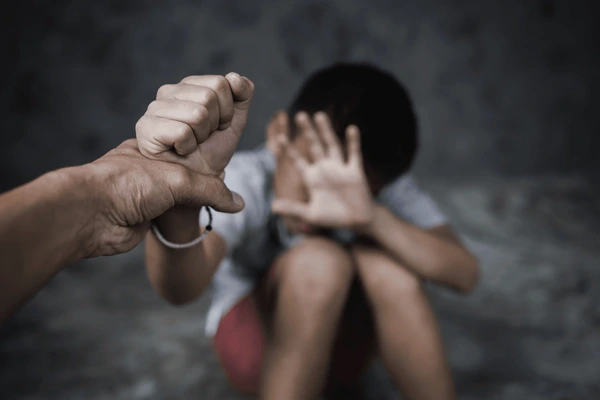
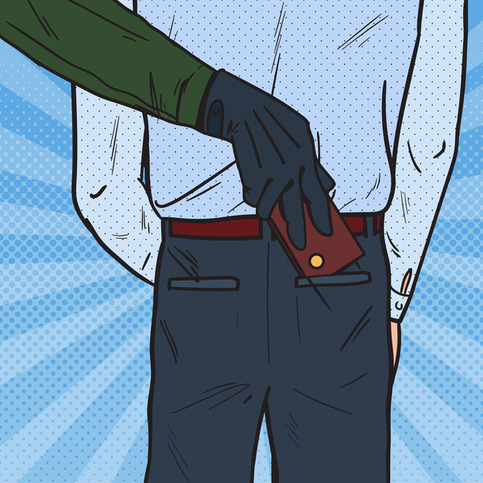

1. Abductions.
(i) Explanation.
Abductions involve unlawfully taking someone away, often involving violence or threat. Examples include criminal abduction, parental abduction, and abduction in science. They can have severe psychological impacts, and are a serious crime with specific laws and penalties.
(ii) Solutions.
Creates job opportunities. Make new policy adaptations and implementations. Create empowerment programs, SIM card registrations, quitting ransom payment, re-modified community policing.
(iii) Tips on how to know your being followed.
See if your not just paranoid meaning that you see them many times during the day and during the night. If still unsure, turn to a different at least 4 times and if you see that they are still there, it's no coincidence that your not being followed. If that's the case, go to a busy or public place like a cafe or a supermarket. Upon reaching there, tell the staff what's happening and call the police immediately.
(iv) Preventions
Follow the local news. If risks increase, take extra precautions. In high-risk areas, don't travel unless you need to. Don't go out without proper security measures and personnel. Tell someone of where you're going and when you expect to return. Be alert. If you feel threatened, leave.
2. Thievery.
(i) Explanation.
Thievery is the unlawful acquisition of someone else's property, involving types like burglary, robbery, shoplifting, and pickpocketing. Penalties range from fines to imprisonment. It can lead to increased security measures and social and economic impacts.
(ii) Solutions.
Implement a loss prevention system. Get the most out of your video security. Test your alarm systems. Lock down your safe. Provide excellent customer service. Improve the visibility of your premises. Keep your business clean. Inform staff of security measures
(iii) Preventions
Keep valuables out of sight; including purses and wallets, cell phones, electronics and jewelry, and never leave your valuables unattended. Do not carry more than you need meaning that you leave unnecessary valuable items securely in your residence. Wait until you arrive at your location to make cell phone calls